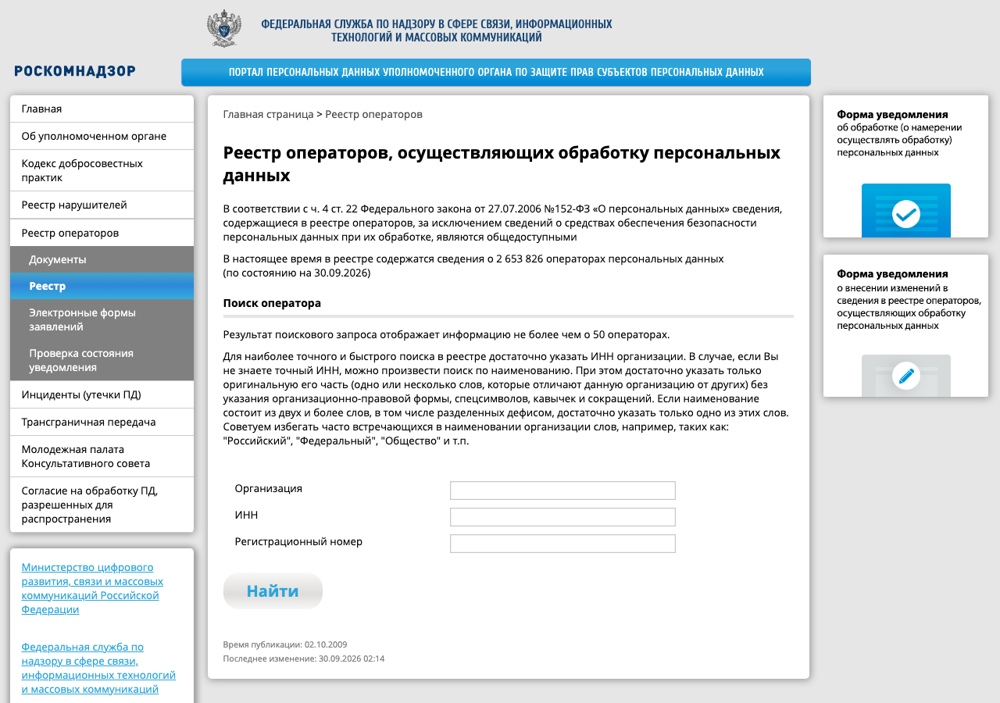

С 1 сентября 2022 года почти все исключения из ч. 2 отменены. Остались узкие случаи: государственные системы безопасности, транспортная безопасность и обработка без средств автоматизации — то есть только на бумаге. Любой сайт с формой, любая CRM и любой SaaS-сервис обрабатывают данные автоматизированно, поэтому уведомление подают все.

Уведомление подают через электронную форму на портале. В нём указывают цели обработки и для каждой цели — категории данных и субъектов, правовое основание, действия с данными, место нахождения базы данных, наличие трансграничной передачи, ответственного за обработку и меры защиты (ч. 3 и 3.1 ст. 22). Роскомнадзор вносит сведения в реестр в течение 30 дней.
Если изменились цели, состав данных, место базы или появилась трансграничная передача, изменения подают не позднее 15-го числа следующего месяца (ч. 7 ст. 22). Переезд базы в другое облако или подключение иностранного сервиса — такое изменение.
Политика публикуется на каждой странице, где собирают данные: у формы заявки, регистрации, оплаты. Обычно это ссылка в подвале сайта и ссылка рядом с кнопкой отправки формы. Политика мобильного приложения доступна из самого приложения.
Штраф за отсутствие политики невелик, но её отсутствие видно при наблюдении за сайтом первым, и после этого проверяют остальное: согласие, уведомление, счётчики.
Оператор-организация назначает ответственного за организацию обработки персональных данных и издаёт локальные акты (п. 1–2 ч. 1 ст. 18.1). Этот набор проверяют, когда приходит запрос Роскомнадзора или начинается проверка.
Каждый, чьи данные обрабатывает сервис, вправе узнать, какие данные о нём есть, для чего и кому они переданы, потребовать исправить или удалить неточные и незаконно полученные (ст. 14). Сроки ответа установлены законом.
| Запрос | Срок | Норма |
|---|---|---|
| Сообщить, какие данные обрабатываются, и дать с ними ознакомиться | 10 рабочих дней, продление на 5 рабочих дней с мотивированным уведомлением | ч. 1 ст. 20 |
| Ответить на запрос Роскомнадзора | 10 рабочих дней, продление на 5 | ч. 4 ст. 20 |
| Прекратить обработку и уничтожить данные после отзыва согласия | 30 дней | ч. 5 ст. 21 |
| Уничтожить данные после достижения цели | 30 дней | ч. 4 ст. 21 |
уведомление РКН (ст. 22)политика на сайте (ст. 18.1)ответственный (ст. 22.1)оценка вреда, модель угрозреестр — 30 днейизменения — до 15 числазапрос субъекта — 10 раб. днейуничтожение — 30 днейч. 3 политика — до 60 тыс.ч. 4 запрос — до 80 тыс.ч. 5 требование — до 90 тыс.ч. 10 уведомление — до 300 тыс.